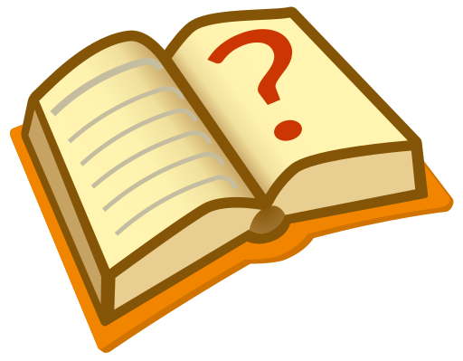
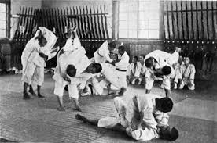
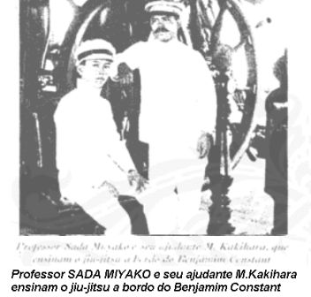
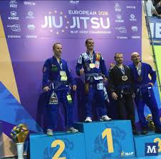

 Este artigo ou seção cita fontes, mas que não cobrem todo o conteúdo. Ajude a inserir referências. Conteúdo não verificável pode ser removido.—Encontre fontes: ABW • CAPES • Google (N•L•A) (Abril de 2012)
Nota: Se procura o livro escrito por Hélio Gracie, veja Gracie Jiu-Jitsu (livro).
História
Origem
Existem diversas histórias que o jiu-jitsu é uma das artes marciais mais antigas do mundo, uma dessas histórias conta que a arte marcial surgiu a mais de 2000 anos atrás na Índia, quando os monges budistas eram atacados por bandidos e tribos mongóis, durante as suas caminhadas entre os templos. Como os monges monastérios indianos eram proibidos pela religião, de se defender com armas, criaram a arte marcial desenvolvendo uma técnica baseada nos princípios do equilíbrio, do sistema de articulação do corpo e das alavancas, assim evitando o uso da força e de armas para poder se defender dos agressores. Com a expansão do budismo na Ásia, o jiu-jitsu também percorreu o sudeste asiático chegando até a China e depois ao Japão, onde se desenvolveu e se popularizou. No Japão, chamado de ju-jutsu era uma das principais artes marciais praticadas pelos guerreiros samurais que caso em um combate perdessem as suas espadas, usavam o combate corpo a corpo como último recurso. Após vários anos o jiu-jitsu chegou ao Brasil, quando Mitsuyo Maeda, conhecido como "Conde Koma", veio para cá e ensinou Gastão Gracie e seu filho Carlos Gracie, Maeda também ensinou Luiz França, futuro professor de Oswaldo Fadda. O jiu-jitsu se desenvolveu ainda mais no Brasil, após Carlos Gracie ensinar a arte marcial ao seu irmão Hélio Gracie que aprimorou as arte marcial para adaptar as técnicas ao seu corpo franzino.
Começo no Brasil
No século XIX, mestres de artes marciais japonesas migraram do Japão para outros continentes, vivendo do ensino dessas artes e de lutas que realizavam.
A primeira apresentação do Jiu-jitsu no Brasil aconteceu no ano de 1906 na cidade de Manaus, capital do Amazonas. Em Novembro daquele ano aportava em Manaus o navio "Jerome", trazendo a bordo dois lutadores japoneses que vinham fazendo uma turnê de exibição de sua arte marcial pelo continente americano: o mestre de Jiu-jitsu Akishima Sadashi e seu assistente Suiotos Ki. Assim que se alojaram na cidade, os dois japoneses logo publicaram uma nota na imprensa desafiando qualquer um que estivesse disposto a enfrentá-los em duelos públicos. Foi então armado uma arena improvisada no circo "Coliseu Metálico Brasileiro", na Praça da Saudade, onde em 18 de Novembro o mestre Akishima e seu discípulo Suiotos enfrentaram mais de uma dúzia de desafiantes locais, vencendo todos eles em menos de cinco minutos em uma noite com grande presença de público. E assim eram realizadas as primeiras lutas de Jiu-jitsu em território brasileiro. Após alguns meses continuando a apresentar suas lutas no circo, Akishima e Suiotos deixaram o Amazonas e seguiram para Liverpool (Inglaterra) no navio "Antony".
Já em 1908 o navio Benjamin Constant, da marinha brasileira, recolheu um grupo de náufragos numa ilha do Pacífico, sendo que entre eles estava o professor japonês de Jiu-jitsu Sada Miyako, sendo ele aceito junto com um discípulo conterrâneo chamado Kakiara, para ficarem a bordo e seguirem viagem ao Brasil. Durante a viagem de retorno os dois japoneses ensinaram o Jiu-jitsu para os marinheiros. Os lutadores chegavam ao Rio de Janeiro a bordo do Benjamin Constant e logo Sada Miyako foi contratado pela marinha para ensinar as técnicas do Jiu-jitsu aos oficiais da instituição, na Fortaleza de Villegagnon, e depois para os militares do exército. Miyako continuou no Brasil por mais algum tempo, fazendo demonstrações e dando aulas particulares de sua arte marcial no Rio e participando de duelos com lutadores locais, como a célebre luta que ele teve com o capoeirista Cyriaco, em 1909.
Mitsuyo Maeda, conhecido como "Conde Koma", foi um grande praticante de Judô, sendo estudante de Jigoro Kano, o fundador do Judô. Em 1904, junto com outros estudantes do Judô, Maeda saiu em uma viagem pelo mundo para disseminar o Judô, passando pelos Estados Unidos, demonstrando na Academia de West Point, continuando para Cuba, México e América Central, em suas viagens também aprendeu o Catch Wrestling (predecessor da Luta Livre Olímpica e Pro Wrestling) e chegou ao Brasil em 1915; uma excursão de lutadores nipônicos aportou em Manaus para dar início à missão liderada por Maeda, de disseminar o judô no Brasil; um dos japoneses, Sanshiro "Barriga Preta" Satake, ficou-se em Manaus e abriu a primeira academia de Judo do Brasil que foi no Atlético Rio Negro Clube, Maeda foi para Belém do Pará, onde fixou residência, existindo até hoje nessa cidade a Academia Conde Koma. Um ano depois, conheceu Gastão Gracie. Gastão era pai de oito filhos, sendo cinco homens, tornou-se entusiasta do judô e levou seu filho Carlos Gracie para aprender a luta japonesa.
Maeda ensinou um grupo que incluía Luiz França, futuro professor do mestre Oswaldo Fadda. Ambos deram início a outro ramo do Jiu-Jitsu no Brasil.
Pequeno e frágil por natureza, Carlos encontrou no judô (na época, ainda conhecido como "Kano jiu-jitsu") o meio de realização pessoal que lhe faltava. Com dezenove anos de idade, transferiu-se para o Rio de Janeiro com a família, sendo professor dessa arte marcial e lutador. Viajou por outros estados brasileiros, ministrando aulas e vencendo adversários mais fortes fisicamente.
Em 1925, voltando ao Rio de Janeiro e abrindo a primeira Academia Gracie de jiu-jítsu, convidou seus irmãos Osvaldo e Gastão para assessorá-lo e assumiu a criação dos menores George, com quatorze anos, e Hélio Gracie, com doze. A partir daí, Carlos transmitiu seus conhecimentos aos irmãos, adequando e aperfeiçoando a técnica à condição física franzina, característica de sua família.
Com o objetivo de provar a superioridade do jiu-jitsu e formar uma tradição familiar, Carlos Gracie desafiou grandes lutadores da época e passou a gerenciar a carreira dos irmãos. A família Gracie lutava em combates de Vale-tudo, onde não haviam regras, lutas terminando pelo nocaute ou finalização.
Lutando contra adversários vinte, trinta quilos mais pesados, os Gracie logo conseguiram fama e notoriedade nacional. Atraídos pelo novo mercado que se abriu em torno do jiu-jitsu, com uma formação que enfatizava a especialização: após a queda, levava-se a luta ao chão e se usavam os golpes finalizadores.
Ao modificar as regras internacionais do judô e jiu-jítsu japonês nas lutas que ele e os irmãos realizavam, Carlos Gracie iniciou o primeiro caso de estilo, ou esporte, reconhecido na história de modalidades brasileiras exportadas para o mundo anos depois, a arte marcial passou a ser denominada de gracie jiu-jitsu e depois veio a surgir o Brazilian jiu-jitsu, sendo exportada para o mundo todo, até mesmo para o Japão.
Hélio Gracie passa a ser o grande nome e difusor do jiu-jítsu, formando inúmeros discípulos, dentre eles Flavio Behring, Júlio Secco . George Gracie foi um desbravador, viajou por todo o Brasil, no entanto estimulou o jiu-jitsu principalmente em São Paulo, tendo como alunos nomes como Nahum Rabay, Candoca, Osvaldo Carnivalle, Romeu Bertho, Otávio de Almeida, e o grande percursor no Estado de Pernambuco Jurandir Moura e dentre outros.
Royce Gracie e Rickson Gracie, filhos de Hélio Gracie, foram pioneiros a levar ao Jiu-Jitsu para os Estados Unidos e Japão, nos primeiros torneios de Vale-tudo/MMA: o UFC, Vale Tudo Japan, Pancrase e Pride FC.
Paralelamente, Luiz França também fixou-se no Rio de Janeiro onde ensinava a "arte suave" na zona norte da cidade. Em 1937, começou a ensinar a arte para Oswaldo Fadda, que conquistou a faixa (obi) de cor preta cinco anos depois. Fadda abriu sua academia em Bento Ribeiro em 1950. Em 1954 desfiou os Gracie e foram organizadas lutas entre os alunos das duas escolas. Os alunos de Oswaldo Fadda venceram a maioria destas lutas.
Deste ramo do jiu-jitsu brasileiro iniciado por França e Fadda vem, o Grande Mestre Luiz Carlos Guedes faixa vermelha 9º grau, os mestres Vasco Bento,8º grau e Wilson Mattos (da "Equipe Mestre Wilson"), Wendell Alexander (co-fundador da Academia Nova União junto com André Pederneiras), Mestre Gustavo Souza, Dilseu Rossoni pioneiro no Estado do Paraná, Júlio Cesar Pereira, um dos fundadores da GFTeam (Grappling Fight Team). Cirval Justino (Clube Condor). Em suas academias/equipes, hoje presentes em vários países, estes mestres formam atletas de destaque tanto no BJJ quanto no MMA (tais como: José Aldo, Leonardo Santos, BJ Penn, Ronaldo Souza, Renan Barão entre outros).
O jiu-jítsu, hoje, é o esporte individual que mais cresce no país: possui cerca de 550 mil praticantes, com 2 500 estabelecimentos de ensino somente nas grandes capitais.[carece de fontes] Na parte de educação, o ensino do jiu-jítsu ganhou cadeira como matéria universitária (Universidade Gama Filho).
Com a criação da Federação de Jiu-Jítsu Brasileiro, as regras e o sistema de graduação foram sistematizados, mas hoje outras foram criadas por outros membros da família Gracie e por pessoas que se desligaram, dando início a era dos campeonatos esportivos nas mesmas regras. Hoje mais organizado, o Jiu-Jítsu Brasileiro já conta com diversas Confederações e Federações Internacionais, mas a Referência foi a fundada por Carlos Gracie Jr. como presidente (da CBJJ e IBJJF) e José Henrique Leão Teixeira Filho como vice-presidente da CBJJ, os dois partiram para uma organização nunca vista antes em competições de jiu-jítsu, as competições nacionais e internacionais que vem sendo realizadas, confirmam a superioridade dos lutadores brasileiros, considerados os melhores do mundo, e projetaram o Jiu-Jitsu Brasileiro, como a arte marcial que mais cresce no mundo atualmente
Desde 1996, o Mundial de jiu-jítsu sempre foi disputado no Rio de Janeiro, exceto em 2007, quando ocorreu nos Estados Unidos da América. O Jiu-Jitsu também é uma das principais disciplinas da Abu Dhabi Combat Club Submission Wrestling World Championship, maior competição que engloba diferentes formas de submission wrestling.
O jiu jitsu Brasileiro em Portugal e na Europa
O Jiu-jítsu chegou a Portugal em 1996 pelas mãos do professor Lauro Figueirôa, que foi com o objetivo de difundir o jiu-jítsu Gracie. Apesar de pouco ou quase nenhum recurso, conseguiu angariar bastantes alunos.
Em 1997, foi quando se realizou o primeiro campeonato da modalidade, realizado dentro da discoteca Bafureira Beach Club (antigo Scala), em São Pedro do Estoril.
Em 1998, o professor Lauro Figueiroa em conjunto com o Grupo SuperStar promoveu o primeiro confronto de vale-tudo em Portugal, entre o o próprio professor, representando o jiu-jítsu e o Mestre Pichote, representando a Capoeira (luta demonstração).
Em 2000, houve a disputa do primeiro Cinturão português de Vale-tudo, entre o Lauro, contra o tricampeão francês de Free-Fight, Eurico Soares. Luta vencida por Lauro por nocaute aos 30 segundos do primeiro round. Compareceram ao evento mais de 4 000 pessoas.
Em 2001, em viagem ao Rio de Janeiro, o Lauro Figueiroa recebeu o convite do Grande Mestre Carlos Gracie Jr. para representar oficialmente a família Gracie em Portugal. Em 2002, devido ao grande crescimento do jiu-jítsu em Portugal e à imigração de muitos professores de Jiu-jítsu, Lauro funda a Associação Luso-Brasileira de Jiu-Jitsu e realiza a 25 de abril deste ano o 1º Campeonato Nacional de Jiu-jítsu Brasileiro. Neste mesmo ano, o Profº Lauro F. organiza e prepara a primeira seleção portuguesa de Jiu-jítsu, que viaja com ele para o Campeonato Mundial no Rio de Janeiro - Brasil, trazendo, como resultado, uma medalha de prata da atleta Carolina Prado e um quarto lugar.
Em 2003, novamente o professor Lauro Figueiroa leva uma delegação portuguesa para o Campeonato Mundial no Rio de Janeiro - Brasil, trazendo mais uma medalha de prata da atleta Carolina Prado e no mesmo ano no Campeonato Master e Senior leva atletas onde conquistam uma medalha de ouro e outra de bronze.
O jiu-jítsu começou a ter maior número de praticantes a partir de 2000/2001, quando se abriram varias academias na zona de Lisboa.
Em 2003, a academia Brigadeiro perdeu o professor Marcos Koji e chegaram a Portugal os professores Marcelo Bernardo e Arnaldo "Pitbull" Santos para dar continuidade ao trabalho feito por Koji.
Em 2004, a Associação Luso-Brasileira de Jiu-Jítsu dirigida pelo professor Lauro, em parceria com a Confederação Brasileira e a Federação Internacional de Jiu-Jítsu, realiza o 1º Campeonato Europeu de Jiu-Jítsu da história e, com grande sucesso, conseguem a participação de atletas de mais de dez países oriundos não só da Europa, como também das Américas e da Ásia.
Neste mesmo ano, Lauro Figueirôa passa a representar a International Budo Union e recebe o cargo de delegado para todo Brasil a convite do grande mestre Pedro Dabauza, nono dan de Jiu-jitsu tradicional.
Atualmente, o Jiu-jítsu está espalhado por Portugal e 60% da Europa por conta de muitos alunos formados para o ensino do Jiu-Jítsu Brasileiro, entre outros professores que imigraram.
